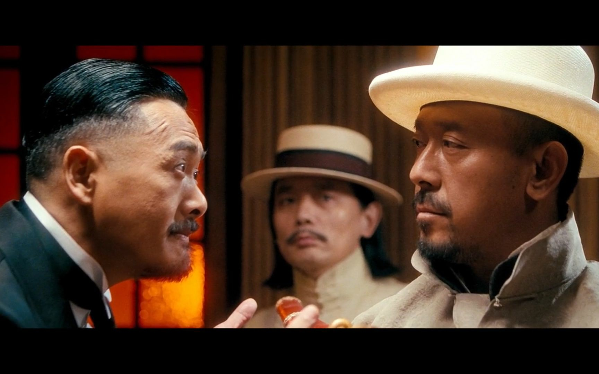
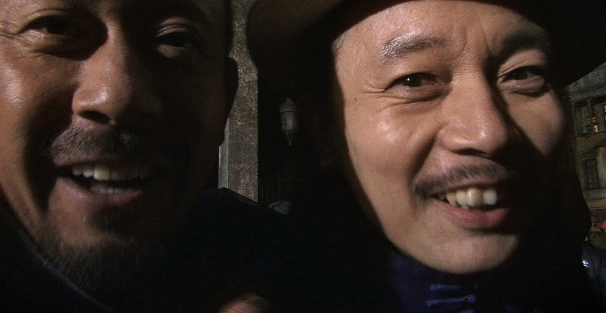
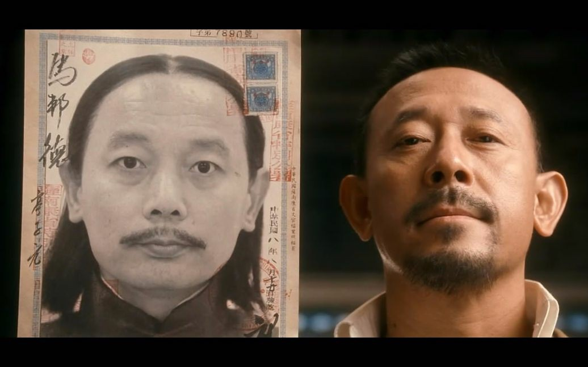
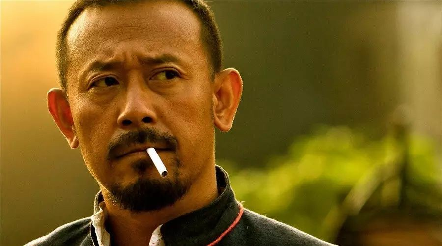
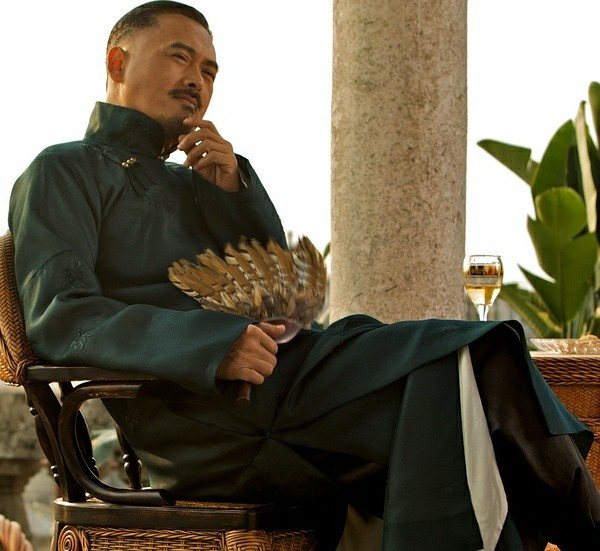
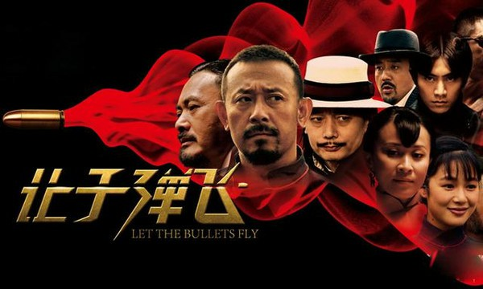

6.剧照
    
《让子弹飞》（英语:Let the Bullets Fly）是2010年上映的一部中国大陆剧情片，由姜文执导，为北洋三部曲的首部曲。 本片有普通话、四川话两个主要版本，主要演员有姜文、周润发、葛优、刘嘉玲以及陈坤等。 该片的中国总票房为6.59亿元人民币。
电影改编自四川作家马识途的长篇小说《夜谭十记》中的第三记《盗官记》一节，片长约2小时12分。 电影中以辛亥革命为背景，并以鸿门宴和小凤仙作为拍摄题材。
民国年间，花钱捐得县长的马邦德（葛优 饰）携妻（刘嘉玲 饰）及随从走马上任。途经南国某地，遭劫匪张麻子（姜文 饰）一伙伏击，随从尽死，只夫妻二人侥幸活命。马为保命，谎称自己是县长的汤 师爷。为汤师爷许下的财富所动，张麻子摇身一变化身县长，带着手下赶赴鹅城上任。有道是天高皇帝远，鹅城地处偏僻，一方霸主黄四郎（周润发 饰）只手遮天，全然不将这个新来的县长放在眼里。张麻子痛打了黄的武教头（姜武 饰），黄则设计害死张的义子小六（张默 饰）。原本只想赚钱的马邦德，怎么也想不到竟会被卷入这场土匪和恶霸的角力之中。鹅城上空愁云密布，血雨腥风在所难免……
| 演员 | 角色 | 备注 |
|---|---|---|
| 姜文 | 张牧之 | 麻匪头头，人称“张麻子”，智勇双全、霸气外露。斗倒黄四郎后与其他弟兄分道扬镳。 |
| 葛优 | 马邦德 | 康城新任县长，师爷死后假扮身份为汤师爷以躲避杀身之祸，周旋在黄四郎与张麻子之间求存，后来误踩地雷被炸死。 |
| 邵兵 | 老二 | 张麻子手下，同性恋，受张麻子之令出城后被假麻子逮住杀死。 |
| 廖凡 | 老三 | 张麻子手下，爱上花姐，斗倒黄四郎后随花姐到浦东离开张麻子。 |
| 杜奕衡 | 老四 | 张麻子手下，离开张麻子到浦东。 |
| 李静 | 老五 | 张麻子手下，离开张麻子到浦东。 |
| 张默 | 老六 | 张麻子手下的遗腹子，为张麻子的义子，被胡万用计逼迫自杀。 |
| 危笑 | 老七 | 张麻子手下，虽然也离开张麻子，但心向着他，把兄弟们想离开一事告诉张麻子后离开。 |
| 冯小刚 | 汤师爷 | 马邦德师爷，随马邦德就任途中，遭到张麻子劫车而死。 |
| 刘嘉玲 | 县长夫人 | 马邦德之妻，原为一青楼女子，出钱给马邦德买官当县长。在胡万偷袭张麻子于县长床上开枪时丧生。 恶霸黄家 |
| 演员 | 角色 | 备注 |
|---|---|---|
| 周润发 | 黄四郎 | 鹅城恶霸，与张麻子斗智斗力惨败，五代家业化为乌有。最后在自家碉楼引爆地雷自杀而亡。 |
| 王强新 | 杨万楼 | 黄四郎之替身，最后被张麻子斩首。 |
| 姚橹 | 胡千 | 黄四郎的军师，尽出馊主意，最后被武智冲用杨万楼的人头打死。 |
| 陈坤 | 胡万 | 黄府管家，冷静残酷，用计逼小六子自杀，后来偷袭张麻子的时候被张麻子弟兄抓到，问话结束后被张麻子枪毙而死。 |
| 杨锐 | 胡百 | 黄四郎手下。 |
| 周韵 | 花姐 | 被黄四郎买来的青楼女子，张麻子、老二、老三都爱 |
| 姜武 | 武智冲 | 黄府团练教头，为清光绪三十一年的武举人。后倒戈张麻子一行人。 |
| 胡军 | 假麻子 | 黄四郎指派的假麻子，头脑不灵光，墙头草，因无意令马邦德死于地雷，被张麻子一枪爆头致死。 |
| 白冰 | 黛玉晴雯 | 黄府婢女。 |
影片在故事、导演、表演、剪辑等各方面获得普遍赞誉。中国大陆评论者主要焦点在于认为片中含有大量政治隐喻与明示，且可与时事新闻切实贴合，因而和苏联政治笑话，《是，首相》，《第五共和国》一起被戏称为“四大人类精神文明遗产”。
而《让子弹飞》本身也经常被中国网友开玩笑要将其“申遗”。
《让子弹飞》开拍前，姜文和制片人马珂曾赴蓉看望马识途，并促膝长谈。“我很欢迎姜文把我的小说拿去拍成电影，我知道他会对有很大改动，但我还是支持他们放手去干。”马识途看过姜文演的《北京人在纽约》和《红高粱》，很喜欢这个很有才气的年轻人，对他改编《盗官记》也很放心，他们怎么改自己都不管。“当时姜文是来请教我四川旧社会的风土人情，以及袍哥土匪是什么样子，因为他告诉我他要演张牧之。”
姜文、姜武兄弟长得有几分相像，两人如果在大银幕上演对手戏，如何增加“辨识度”以免观众出戏，是导演姜文不得不考虑的问题。要让观众认不出两人是兄弟，这给担任造型指导的张叔平出了一道难题。姜武被贴上各种各样夸张的胡子、假发，但效果都不让人满意。还是姜武在家里想出把头发留长烫卷，弄成爆炸头型，这才让包括导演姜文在内的所有人满意。
为了诠释片中杀人不眨眼的悍匪胡万，姜文邀请张叔平为陈坤打造了五款截然不同的造型，服装上更是囊括了北洋时期所出现的全部服装种类，从粗布麻衣、丝质长衫、中山装到西装。原本姜文打算将陈坤彻底毁容，到了正式拍摄时却不忍下手，决定要保留陈坤原本帅气的一面，运用表演来体现出角色的狠劲。
葛优与刘嘉玲拍摄激情戏时，导演姜文要求绝对清场，现场只留下摄影师和灯光师，其余人一律在片场外。镜头回放也只有姜文本人可以观看。整个拍摄过程都在屋内进行，房内一直有叮叮哐啷的声响。每条拍完都是葛优披头散发，满头大汗地跑出来，动作表情非常可笑，然后刘嘉玲手里再拿着两个硕大的银球跟了出来。这场戏足足拍了两天才拍完。
《让子弹飞》是一部让人难以定义和归类的电影，因为姜文独特的个性和创作才华，让这部影片有着独一无二的个性特质。这意味着人们难以用既有类型片的常规去判定这部片子，因而对它的各种解读五花八门、包罗万象。
《让子弹飞》是一部不完美的影片，尽管演员的魅力让人过瘾，影片的影像让人激动，幽默的人物和语言让人大笑，但情节和叙事不够合理流畅的硬伤，也同样地明显。然而姜文的才华和激情又是如此无可抵挡，足以强势到让观众不能不在他的逻辑中去理解他的作品，在他的方式中谅解了《让子弹飞》的不合理硬伤。该片就像是真人版的卡通电影。姜文把一个成年人的幻梦做得如此天真烂漫、五彩斑斓，又如此一本正经、正气凛然。
该片梦幻般的开头——白色骏马拉着蒸汽火车穿行在山林之间，佐以久石让抒情优美的配乐，这美丽的画面仿佛就像从日本动画大师宫崎骏的电影意象中幻化而来。而接下来巨大的火锅，带着麻将牌面具的土匪，飞舞在天空中的火车车厢，乃至于击打着日本鬼太鼓迎宾的白面妇女，悄悄观察着新上任县长的鹅城一霸。无论形象、情节、人物的特性，还是画面的想像力，莫不带着强烈夸张的卡通片风格。那种主题不离正邪相争的奇幻冒险故事，仿佛与日本“热血”系动画片出自一脉。